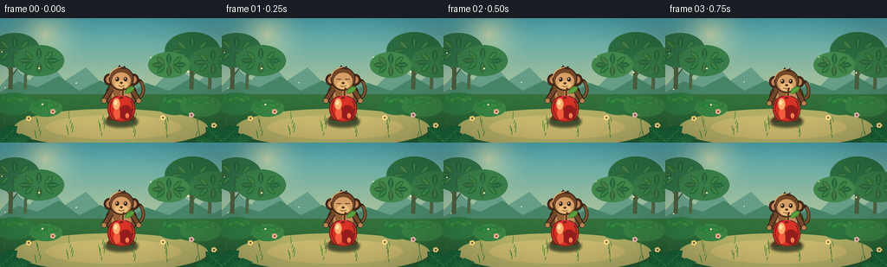
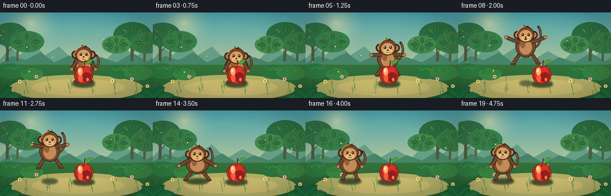
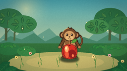
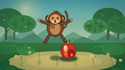
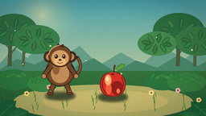

CODING AGENTS AS PIXEL WORLD MODELS
traex/DeepSeek-V4.1-Flash · dynamic_spatial_relationship_0053
点击播放 · 原生 RGB 像素
逐轮保存的候选
回放视频、检查图与代码变化。
每份候选均可单独播放。实际图片检查记录在下方工具轨迹中。
候选 01播放与检查图
点击播放 · 原生 RGB 像素


展开代码变化
--- 上一保存版本
+++ 本次保存版本
@@ -0,0 +1,529 @@
+#!/usr/bin/env python3
+"""Generate a five-second, text-only monkey-and-apple animation."""
+
+from __future__ import annotations
+
+import argparse
+import math
+from pathlib import Path
+
+import numpy as np
+from PIL import Image, ImageDraw, ImageFilter
+
+import artifact_io
+
+
+WIDTH = 256
+HEIGHT = 144
+FRAMES = 20
+FPS = 4.0
+SS = 4 # Supersampling factor for smooth final edges.
+CW = WIDTH * SS
+CH = HEIGHT * SS
+
+
+def sc(value: float) -> int:
+ return int(round(value * SS))
+
+
+def box(x0: float, y0: float, x1: float, y1: float) -> tuple[int, int, int, int]:
+ return sc(x0), sc(y0), sc(x1), sc(y1)
+
+
+def pts(values: list[tuple[float, float]]) -> list[tuple[int, int]]:
+ return [(sc(x), sc(y)) for x, y in values]
+
+
+def rgba(color: tuple[int, int, int], alpha: int = 255) -> tuple[int, int, int, int]:
+ return color[0], color[1], color[2], alpha
+
+
+def ellipse(
+ draw: ImageDraw.ImageDraw,
+ cx: float,
+ cy: float,
+ rx: float,
+ ry: float,
+ fill=None,
+ outline=None,
+ width: float = 1.0,
+) -> None:
+ draw.ellipse(
+ box(cx - rx, cy - ry, cx + rx, cy + ry),
+ fill=fill,
+ outline=outline,
+ width=max(1, sc(width)),
+ )
+
+
+def rounded(
+ draw: ImageDraw.ImageDraw,
+ x0: float,
+ y0: float,
+ x1: float,
+ y1: float,
+ radius: float,
+ fill=None,
+ outline=None,
+ width: float = 1.0,
+) -> None:
+ draw.rounded_rectangle(
+ box(x0, y0, x1, y1),
+ radius=sc(radius),
+ fill=fill,
+ outline=outline,
+ width=max(1, sc(width)),
+ )
+
+
+def poly(
+ draw: ImageDraw.ImageDraw,
+ points: list[tuple[float, float]],
+ fill=None,
+ outline=None,
+ width: float = 1.0,
+) -> None:
+ draw.polygon(pts(points), fill=fill, outline=outline)
+ if outline is not None and width > 1:
+ closed = pts(points) + [pts(points)[0]]
+ draw.line(closed, fill=outline, width=max(1, sc(width)), joint="curve")
+
+
+def line(
+ draw: ImageDraw.ImageDraw,
+ points: list[tuple[float, float]],
+ fill,
+ width: float,
+ joint: str = "curve",
+) -> None:
+ draw.line(pts(points), fill=fill, width=max(1, sc(width)), joint=joint)
+
+
+def cubic(p0, p1, p2, p3, count=24):
+ result = []
+ for i in range(count + 1):
+ t = i / count
+ u = 1.0 - t
+ x = u**3 * p0[0] + 3 * u * u * t * p1[0] + 3 * u * t * t * p2[0] + t**3 * p3[0]
+ y = u**3 * p0[1] + 3 * u * u * t * p1[1] + 3 * u * t * t * p2[1] + t**3 * p3[1]
+ result.append((x, y))
+ return result
+
+
+def vertical_gradient(top: tuple[int, int, int], bottom: tuple[int, int, int]) -> Image.Image:
+ y = np.linspace(0.0, 1.0, CH, dtype=np.float32)[:, None]
+ colors = np.asarray(top, dtype=np.float32)[None, :] * (1 - y) + np.asarray(bottom, dtype=np.float32)[None, :] * y
+ rgb = np.repeat(colors[:, None, :], CW, axis=1).astype(np.uint8)
+ return Image.fromarray(rgb, "RGB").convert("RGBA")
+
+
+def add_radial_glow(
+ image: Image.Image,
+ center: tuple[float, float],
+ radius: float,
+ color: tuple[int, int, int],
+ strength: float,
+) -> None:
+ yy, xx = np.mgrid[0:CH, 0:CW]
+ cx, cy = center[0] * SS, center[1] * SS
+ r = np.sqrt((xx - cx) ** 2 + (yy - cy) ** 2) / (radius * SS)
+ alpha = np.clip(1.0 - r, 0.0, 1.0) ** 2 * strength
+ base = np.asarray(image.convert("RGB"), dtype=np.float32)
+ target = np.asarray(color, dtype=np.float32)[None, None, :]
+ blended = base * (1 - alpha[:, :, None]) + target * alpha[:, :, None]
+ image.paste(Image.fromarray(blended.astype(np.uint8), "RGB"))
+
+
+def draw_leaf(
+ draw: ImageDraw.ImageDraw,
+ cx: float,
+ cy: float,
+ length: float,
+ width: float,
+ angle: float,
+ fill,
+ outline,
+ vein=None,
+) -> None:
+ ca, sa = math.cos(angle), math.sin(angle)
+
+ def transform(x: float, y: float) -> tuple[float, float]:
+ return cx + x * ca - y * sa, cy + x * sa + y * ca
+
+ shape = [
+ transform(-length * 0.50, 0),
+ transform(-length * 0.18, -width * 0.48),
+ transform(length * 0.22, -width * 0.52),
+ transform(length * 0.52, 0),
+ transform(length * 0.18, width * 0.46),
+ transform(-length * 0.20, width * 0.42),
+ ]
+ poly(draw, shape, fill=fill, outline=outline, width=0.65)
+ if vein is not None:
+ line(draw, [transform(-length * 0.38, 0), transform(length * 0.36, 0)], vein, 0.55)
+ for along in (-0.12, 0.08, 0.25):
+ p = transform(length * along, 0)
+ q = transform(length * (along - 0.10), -width * 0.25)
+ r = transform(length * (along - 0.10), width * 0.25)
+ line(draw, [p, q], vein, 0.35)
+ line(draw, [p, r], vein, 0.35)
+
+
+def draw_background(t: float) -> Image.Image:
+ image = vertical_gradient((72, 159, 174), (241, 220, 151))
+ add_radial_glow(image, (52, 18), 58, (255, 240, 177), 0.54)
+ draw = ImageDraw.Draw(image, "RGBA")
+
+ # Hazy mountain silhouettes establish depth without competing with the actors.
+ poly(
+ draw,
+ [(-8, 87), (18, 59), (34, 72), (54, 49), (75, 72), (99, 57), (123, 81), (150, 65),
+ (177, 80), (202, 56), (228, 74), (250, 57), (264, 86)],
+ fill=rgba((100, 157, 139), 175),
+ )
+ poly(
+ draw,
+ [(-8, 91), (21, 73), (43, 80), (68, 67), (91, 84), (116, 72), (143, 89),
+ (169, 75), (195, 84), (222, 68), (246, 82), (264, 72), (264, 96), (-8, 96)],
+ fill=rgba((70, 132, 107), 205),
+ )
+
+ # Distant tree trunks and a soft canopy.
+ for x, trunk_w, tone in [(12, 5, (73, 91, 61)), (29, 3.5, (78, 101, 67)), (221, 5, (71, 92, 61)), (242, 4, (79, 98, 65))]:
+ line(draw, [(x, 82), (x + 1, 43)], rgba(tone, 220), trunk_w)
+ line(draw, [(x + trunk_w * 0.25, 67), (x + 12, 53)], rgba(tone, 200), 1.4)
+ line(draw, [(x, 61), (x - 10, 49)], rgba(tone, 190), 1.2)
+ for cx, cy, rx, ry, tone in [
+ (17, 37, 29, 20, (47, 112, 72)),
+ (45, 49, 29, 18, (55, 125, 74)),
+ (222, 38, 32, 22, (42, 108, 66)),
+ (246, 51, 28, 18, (54, 120, 70)),
+ (195, 54, 24, 15, (65, 135, 77)),
+ ]:
+ ellipse(draw, cx, cy, rx, ry, fill=rgba(tone, 230))
+ for i in range(8):
+ a = i / 8 * math.tau + t * 0.04
+ draw_leaf(
+ draw,
+ cx + math.cos(a) * rx * 0.55,
+ cy + math.sin(a) * ry * 0.45,
+ 13,
+ 6,
+ a,
+ rgba((36 + (i % 3) * 8, 99 + (i % 2) * 12, 61), 235),
+ rgba((32, 80, 54), 180),
+ rgba((95, 159, 86), 160),
+ )
+
+ # Sunlit meadow and a worn clearing under the actors.
+ ground = vertical_gradient((80, 148, 75), (34, 92, 53))
+ mask = Image.new("L", (CW, CH), 0)
+ md = ImageDraw.Draw(mask)
+ md.rectangle((0, sc(88), CW, CH), fill=255)
+ image.paste(ground, (0, 0), mask)
+ draw = ImageDraw.Draw(image, "RGBA")
+ ellipse(draw, 128, 127, 112, 22, fill=rgba((173, 171, 104), 55))
+ ellipse(draw, 131, 126, 78, 14, fill=rgba((193, 181, 111), 36))
+
+ # Low shrubs behind the clearing.
+ for cx, cy, rx, ry, tone in [
+ (17, 99, 23, 13, (44, 119, 66)),
+ (53, 104, 19, 10, (55, 132, 69)),
+ (202, 100, 22, 12, (43, 113, 63)),
+ (232, 102, 24, 12, (54, 126, 67)),
+ ]:
+ ellipse(draw, cx, cy, rx, ry, fill=rgba(tone, 245))
+ for i in range(5):
+ draw_leaf(
+ draw,
+ cx - rx * 0.55 + i * rx * 0.27,
+ cy - ry * 0.5 + (i % 2) * 2,
+ 10,
+ 5,
+ -0.9 + i * 0.42 + math.sin(t * 1.6 + i) * 0.03,
+ rgba((45 + i * 3, 128 + (i % 2) * 8, 64), 245),
+ rgba((29, 79, 48), 180),
+ )
+
+ # Grass blades and small flowers.
+ for i in range(42):
+ x = (i * 37 + 11) % 260 - 2
+ base_y = 117 + ((i * 19) % 23)
+ sway = math.sin(t * 1.4 + i * 0.8) * 1.5
+ h = 4 + (i % 4) * 1.7
+ line(draw, [(x, base_y), (x + sway, base_y - h)], rgba((45 + (i % 4) * 8, 118 + (i % 3) * 9, 54), 180), 0.65)
+ for x, y, color in [(33, 116, (249, 220, 123)), (61, 108, (246, 170, 150)), (188, 115, (248, 219, 137)), (221, 112, (235, 177, 188)), (247, 124, (248, 222, 142))]:
+ for k in range(5):
+ a = k / 5 * math.tau
+ ellipse(draw, x + math.cos(a) * 1.7, y + math.sin(a) * 1.7, 1.5, 1.5, fill=rgba(color, 235))
+ ellipse(draw, x, y, 1.0, 1.0, fill=rgba((99, 84, 43), 240))
+
+ # Foreground leaf framing, kept low and away from the action.
+ draw_leaf(draw, 7, 137, 34, 18, -0.75, rgba((25, 99, 59), 255), rgba((15, 66, 42), 235), rgba((68, 139, 74), 210))
+ draw_leaf(draw, 20, 143, 31, 15, -0.30, rgba((31, 109, 63), 255), rgba((16, 70, 43), 235), rgba((78, 151, 79), 210))
+ draw_leaf(draw, 251, 138, 35, 18, -2.42, rgba((25, 100, 57), 255), rgba((14, 65, 39), 235), rgba((70, 144, 77), 210))
+ draw_leaf(draw, 239, 145, 30, 14, -2.80, rgba((31, 110, 60), 255), rgba((16, 69, 40), 235), rgba((80, 154, 79), 210))
+
+ # A few drifting motes catch the warm light.
+ for i in range(8):
+ x = (i * 43 + t * (3.5 + i * 0.2)) % 254 + 2
+ y = 39 + (i * 17) % 60 + math.sin(t * 1.2 + i) * 2.2
+ ellipse(draw, x, y, 0.65 + (i % 2) * 0.3, 0.65 + (i % 2) * 0.3, fill=rgba((255, 241, 177), 95))
+ return image
+
+
+def draw_shadow(image: Image.Image, monkey_x: float, jump_y: float, monkey_pose: str) -> None:
+ layer = Image.new("RGBA", (CW, CH), (0, 0, 0, 0))
+ d = ImageDraw.Draw(layer, "RGBA")
+ jump_ratio = min(1.0, max(0.0, -jump_y / 32.0))
+ shadow_rx = 18 - jump_ratio * 8
+ shadow_alpha = int(82 - jump_ratio * 42)
+ ellipse(d, monkey_x, 119, shadow_rx, 4.0, fill=rgba((22, 49, 33), shadow_alpha))
+ ellipse(d, 140, 120.5, 17.5, 4.5, fill=rgba((25, 47, 31), 82))
+ layer = layer.filter(ImageFilter.GaussianBlur(sc(1.8)))
+ image.alpha_composite(layer)
+
+
+def limb(draw: ImageDraw.ImageDraw, start, elbow, hand, fur, outline, width=5.0) -> None:
+ curve = cubic(start, elbow, elbow, hand, 16)
+ line(draw, curve, rgba((34, 24, 20), 255), width + 1.5)
+ line(draw, curve, fur, width)
+ ellipse(draw, hand[0], hand[1], 3.1, 3.0, fill=rgba((184, 128, 82), 255), outline=outline, width=0.55)
+
+
+def draw_monkey(image: Image.Image, x: float, jump_y: float, pose: dict, t: float) -> None:
+ draw = ImageDraw.Draw(image, "RGBA")
+ foot_y = 116.0 + jump_y
+ head_y = foot_y - 46.0 + pose.get("head_bob", 0.0)
+ body_y = foot_y - 27.0
+ body_w = 18.0 * pose.get("squash_x", 1.0)
+ body_h = 18.0 * pose.get("squash_y", 1.0)
+ fur = rgba((113, 72, 42), 255)
+ fur_dark = rgba((73, 43, 28), 255)
+ outline = rgba((48, 31, 23), 245)
+ belly = rgba((190, 139, 91), 255)
+
+ # Tail is drawn first and curls behind the body.
+ tail_raise = pose.get("tail_raise", 0.0)
+ tail = cubic(
+ (x + body_w * 0.72, body_y + 2),
+ (x + 26, body_y + 8 - tail_raise * 5),
+ (x + 29, body_y - 10 - tail_raise * 14),
+ (x + 21, body_y - 17 - tail_raise * 16),
+ 24,
+ )
+ line(draw, tail, rgba((53, 34, 24), 255), 4.0)
+ line(draw, tail, rgba((124, 81, 47), 255), 2.4)
+ ellipse(draw, tail[-1][0], tail[-1][1], 1.6, 1.6, fill=rgba((61, 38, 26), 255))
+
+ # Legs and feet.
+ leg_spread = pose.get("leg_spread", 0.0)
+ knee_l = (x - 8 - leg_spread * 4, foot_y - 11)
+ foot_l = (x - 12 - leg_spread * 9, foot_y - 1 + pose.get("leg_lift_l", 0.0))
+ knee_r = (x + 8 + leg_spread * 4, foot_y - 11)
+ foot_r = (x + 12 + leg_spread * 9, foot_y - 1 + pose.get("leg_lift_r", 0.0))
+ limb(draw, (x - 6, body_y + body_h * 0.45), knee_l, foot_l, fur, outline, 4.7)
+ limb(draw, (x + 6, body_y + body_h * 0.45), knee_r, foot_r, fur, outline, 4.7)
+ ellipse(draw, foot_l[0], foot_l[1] + 1, 4.2, 2.2, fill=rgba((94, 59, 37), 255), outline=outline, width=0.5)
+ ellipse(draw, foot_r[0], foot_r[1] + 1, 4.2, 2.2, fill=rgba((94, 59, 37), 255), outline=outline, width=0.5)
+
+ # Body and warm belly patch.
+ ellipse(draw, x, body_y, body_w, body_h, fill=fur, outline=outline, width=1.0)
+ ellipse(draw, x, body_y + 2, body_w * 0.62, body_h * 0.66, fill=belly)
+ ellipse(draw, x - 5, body_y - 4, 4.5, 7.5, fill=rgba((145, 96, 57), 105))
+
+ # Arms can reach upward in the air and relax at the end.
+ arm_raise = pose.get("arm_raise", 0.0)
+ arm_spread = pose.get("arm_spread", 0.0)
+ left_elbow = (x - 15 - arm_spread * 6, body_y - 3 - arm_raise * 7)
+ left_hand = (x - 20 - arm_spread * 13, body_y + 4 - arm_raise * 20)
+ right_elbow = (x + 15 + arm_spread * 6, body_y - 3 - arm_raise * 7)
+ right_hand = (x + 20 + arm_spread * 13, body_y + 4 - arm_raise * 20)
+ limb(draw, (x - body_w * 0.62, body_y - 7), left_elbow, left_hand, fur, outline, 4.8)
+ limb(draw, (x + body_w * 0.62, body_y - 7), right_elbow, right_hand, fur, outline, 4.8)
+
+ # Ears, head, and face.
+ ear_y = head_y + 1
+ ellipse(draw, x - 14.2, ear_y, 6.0, 6.8, fill=fur_dark, outline=outline, width=0.8)
+ ellipse(draw, x + 14.2, ear_y, 6.0, 6.8, fill=fur_dark, outline=outline, width=0.8)
+ ellipse(draw, x - 14.2, ear_y, 3.4, 4.0, fill=rgba((191, 135, 88), 255))
+ ellipse(draw, x + 14.2, ear_y, 3.4, 4.0, fill=rgba((191, 135, 88), 255))
+ ellipse(draw, x, head_y, 14.3, 13.5, fill=fur, outline=outline, width=1.0)
+ ellipse(draw, x, head_y + 2.4, 10.8, 9.6, fill=rgba((209, 158, 103), 255))
+ ellipse(draw, x, head_y + 6.8, 7.3, 4.7, fill=rgba((230, 186, 126), 255))
+
+ # Hair tuft.
+ poly(
+ draw,
+ [(x - 5, head_y - 12), (x - 2, head_y - 16), (x, head_y - 12.5),
+ (x + 4, head_y - 15), (x + 5, head_y - 11)],
+ fill=fur_dark,
+ outline=outline,
+ width=0.5,
+ )
+
+ blink = pose.get("blink", 0.0)
+ eye_y = head_y + 0.4
+ if blink > 0.5:
+ line(draw, [(x - 7.4, eye_y), (x - 2.2, eye_y)], rgba((54, 35, 24), 255), 0.8)
+ line(draw, [(x + 2.2, eye_y), (x + 7.4, eye_y)], rgba((54, 35, 24), 255), 0.8)
+ else:
+ ellipse(draw, x - 4.8, eye_y, 2.0, 2.5, fill=rgba((53, 34, 23), 255))
+ ellipse(draw, x + 4.8, eye_y, 2.0, 2.5, fill=rgba((53, 34, 23), 255))
+ ellipse(draw, x - 5.3, eye_y - 0.7, 0.65, 0.8, fill=rgba((255, 249, 218), 235))
+ ellipse(draw, x + 4.3, eye_y - 0.7, 0.65, 0.8, fill=rgba((255, 249, 218), 235))
+ ellipse(draw, x, head_y + 4.8, 1.7, 1.25, fill=rgba((91, 55, 35), 255))
+ if pose.get("mouth_open", 0.0) > 0.4:
+ ellipse(draw, x, head_y + 8.0, 2.2, 1.5, fill=rgba((86, 39, 32), 255))
+ else:
+ line(draw, cubic((x - 3.2, head_y + 7.8), (x - 1.2, head_y + 9.3), (x + 1.2, head_y + 9.3), (x + 3.2, head_y + 7.8), 10), rgba((91, 53, 35), 255), 0.65)
+
+ # A small fur rim light keeps the monkey separated from the dark greens.
+ arc_box = box(x - 14.4, head_y - 13.6, x + 14.4, head_y + 13.6)
+ draw.arc(arc_box, 188, 268, fill=rgba((233, 177, 111), 120), width=sc(0.9))
+
+
+def draw_apple(image: Image.Image, cx: float = 140.0, cy: float = 103.5) -> None:
+ draw = ImageDraw.Draw(image, "RGBA")
+ outline = rgba((105, 33, 27), 255)
+
+ # Stem and leaf sit behind the fruit crown.
+ line(draw, [(cx + 1.5, cy - 12), (cx + 2.0, cy - 20), (cx + 3.0, cy - 23)], rgba((83, 53, 27), 255), 2.1)
+ draw_leaf(draw, cx + 9.5, cy - 20.3, 13.5, 6.6, -0.55, rgba((76, 145, 57), 255), rgba((44, 96, 41), 240), rgba((135, 189, 84), 210))
+
+ # Two slightly offset lobes produce the familiar apple silhouette.
+ ellipse(draw, cx - 3.8, cy + 1.2, 12.1, 14.7, fill=rgba((201, 47, 41), 255), outline=outline, width=0.9)
+ ellipse(draw, cx + 3.8, cy + 1.2, 12.1, 14.7, fill=rgba((213, 51, 39), 255), outline=outline, width=0.9)
+ ellipse(draw, cx, cy + 1.4, 13.3, 15.1, fill=rgba((211, 49, 38), 255))
+ # Restore a crisp dark contour after the lobe union.
+ line(draw, cubic((cx - 10.5, cy - 8.0), (cx - 16.2, cy + 1), (cx - 12.6, cy + 12.8), (cx, cy + 16.3), 26), outline, 0.95)
+ line(draw, cubic((cx + 10.5, cy - 8.0), (cx + 16.2, cy + 1), (cx + 12.6, cy + 12.8), (cx, cy + 16.3), 26), outline, 0.95)
+
+ # Shading, blush, and a soft reflected-light edge.
+ ellipse(draw, cx + 5.2, cy + 5.5, 7.7, 8.4, fill=rgba((145, 30, 31), 75))
+ ellipse(draw, cx - 5.2, cy + 6.8, 3.6, 7.0, fill=rgba((239, 92, 61), 65))
+ ellipse(draw, cx - 5.7, cy - 4.2, 4.0, 6.5, fill=rgba((255, 171, 111), 165))
+ ellipse(draw, cx - 6.8, cy - 5.8, 1.8, 2.7, fill=rgba((255, 226, 171), 220))
+ ellipse(draw, cx + 6.7, cy + 9.2, 2.0, 3.0, fill=rgba((255, 124, 80), 65))
+ ellipse(draw, cx, cy - 11.5, 2.0, 1.1, fill=rgba((108, 33, 27), 190))
+
+
+def pose_for_frame(frame: int) -> tuple[float, float, dict, float]:
+ t = frame / FPS
+ jump_y = 0.0
+ pose = {
+ "head_bob": math.sin(t * 1.8) * 0.45,
+ "tail_raise": 0.0,
+ "leg_spread": 0.0,
+ "arm_raise": 0.0,
+ "arm_spread": 0.0,
+ "squash_x": 1.0,
+ "squash_y": 1.0,
+ "blink": 0.0,
+ "mouth_open": 0.0,
+ "leg_lift_l": 0.0,
+ "leg_lift_r": 0.0,
+ }
+
+ # Hold behind the apple long enough for the initial relation to register.
+ if frame <= 2:
+ x = 140.0
+ pose["blink"] = 1.0 if frame == 1 else 0.0
+ pose["arm_raise"] = -0.12
+ return x, jump_y, pose, t
+
+ # Anticipation.
+ if frame == 3:
+ pose.update(squash_x=1.08, squash_y=0.92, arm_raise=-0.20, head_bob=1.2)
+ return 140.0, 1.5, pose, t
+
+ # Airborne phase with an ease-in/ease-out horizontal path and a clean parabola.
+ if 4 <= frame <= 13:
+ u = (frame - 4) / 9.0
+ ease = u * u * (3 - 2 * u)
+ x = 140.0 - 65.0 * ease
+ jump_y = -33.0 * math.sin(math.pi * u)
+ air = math.sin(math.pi * u)
+ pose.update(
+ tail_raise=0.45 + 0.55 * air,
+ leg_spread=0.40 + 0.60 * air,
+ arm_raise=0.28 + 0.68 * air,
+ arm_spread=0.35 + 0.65 * air,
+ squash_x=1.0 - 0.05 * air,
+ squash_y=1.0 + 0.06 * air,
+ mouth_open=1.0 if 0.35 < u < 0.72 else 0.0,
+ head_bob=-0.7 * air,
+ leg_lift_l=3.4 * air,
+ leg_lift_r=2.0 * air,
+ )
+ if frame == 13:
+ pose.update(leg_spread=0.9, arm_spread=1.2, arm_raise=0.1, squash_y=0.9, head_bob=1.2)
+ jump_y = 0.8
+ return x, jump_y, pose, t
+
+ # Landing compression and a short, quiet recovery.
+ if frame in (14, 15):
+ x = 74.5
+ pose.update(
+ squash_x=1.08 if frame == 14 else 1.03,
+ squash_y=0.90 if frame == 14 else 0.96,
+ arm_spread=0.80 if frame == 14 else 0.35,
+ arm_raise=0.05,
+ leg_spread=0.85 if frame == 14 else 0.42,
+ tail_raise=0.55 if frame == 14 else 0.22,
+ head_bob=1.5 if frame == 14 else 0.4,
+ )
+ return x, 1.0 if frame == 14 else 0.2, pose, t
+
+ x = 74.5
+ pose["head_bob"] = math.sin((frame - 14) * 0.85) * 0.5
+ pose["tail_raise"] = 0.13 + 0.08 * math.sin(t * 2.2)
+ pose["blink"] = 1.0 if frame == 18 else 0.0
+ pose["arm_raise"] = -0.08
+ return x, 0.0, pose, t
+
+
+def render_frame(frame: int) -> Image.Image:
+ x, jump_y, pose, t = pose_for_frame(frame)
+ image = draw_background(t)
+ draw_shadow(image, x, jump_y, "air" if jump_y < -2 else "ground")
+ draw_monkey(image, x, jump_y, pose, t)
+ # The apple is a foreground occluder during the opening beat.
+ draw_apple(image)
+
+ # Gentle vignette and a final warm color grade.
+ arr = np.asarray(image.convert("RGB"), dtype=np.float32)
+ yy, xx = np.mgrid[0:CH, 0:CW]
+ nx = (xx / (CW - 1) - 0.5) * 2
+ ny = (yy / (CH - 1) - 0.5) * 2
+ vignette = np.clip(1.08 - 0.16 * (nx * nx + ny * ny), 0.84, 1.0)
+ arr *= vignette[:, :, None]
+ arr[:, :, 0] *= 1.025
+ arr[:, :, 1] *= 1.012
+ arr[:, :, 2] *= 0.98
+ arr = np.clip(arr, 0, 255).astype(np.uint8)
+
+ small = Image.fromarray(arr, "RGB").resize((WIDTH, HEIGHT), Image.Resampling.LANCZOS)
+
+ # Very light ordered grain prevents banding in the sky without looking noisy.
+ rng = np.random.default_rng(1907 + frame)
+ noise = rng.normal(0.0, 1.15, (HEIGHT, WIDTH, 1))
+ out = np.clip(np.asarray(small, dtype=np.float32) + noise, 0, 255).astype(np.uint8)
+ return Image.fromarray(out, "RGB")
+
+
+def main() -> None:
+ parser = argparse.ArgumentParser()
+ parser.add_argument("--out", type=Path, default=Path(__file__).resolve().parent)
+ args = parser.parse_args()
+ case_dir = args.out.resolve()
+ case_dir.mkdir(parents=True, exist_ok=True)
+
+ frames = np.stack([np.asarray(render_frame(i), dtype=np.uint8) for i in range(FRAMES)])
+ assert frames.shape == (FRAMES, HEIGHT, WIDTH, 3)
+ artifact_io.save(frames, case_dir)
+ print(f"Wrote {FRAMES} frames at {WIDTH}x{HEIGHT}, {FPS:g} fps to {case_dir}")
+
+
+if __name__ == "__main__":
+ main()
可观测工具轨迹
实际执行的命令与返回图片。
命令 1exit 0
/bin/bash -c "pwd && rg --files -g '"'!*__pycache__*'"' -g '"'!*.pyc'"' | sed -n '1,160p'"
命令 2exit 0
/bin/bash -c "printf '%s\\n' '--- prompt.txt ---'; sed -n '1,240p' prompt.txt; printf '%s\\n' '--- GENERATION_RULES.md ---'; sed -n '1,320p' GENERATION_RULES.md; printf '%s\\n' '--- task_spec.json ---'; sed -n '1,320p' task_spec.json"
命令 3exit 0
/bin/bash -c "command -v ffmpeg || true; command -v python3 || true; command -v blender || true; command -v convert || true; command -v magick || true; command -v node || true; python3 - <<'PY'
mods=['numpy','PIL','cv2','imageio','moviepy','matplotlib','scipy','torch','diffusers']
for m in mods:
try:
mod=__import__(m)
print(m, getattr(mod,'__version__','ok'))
except Exception as e:
print(m,'MISSING',type(e).__name__)
PY"命令 4exit 0
/bin/bash -c "sed -n '1,260p' artifact_io.py"
命令 5exit 0
/bin/bash -c "sed -n '1,260p' player_template.html"
命令 6exit 0
/bin/bash -c 'ls -la; find . -maxdepth 2 -type d -print'
命令 7exit 0
/bin/bash -c 'MPLCONFIGDIR=.tmp/mpl python3 generate.py'
命令 8exit 0
/bin/bash -c "python3 - <<'PY'
from pathlib import Path
import json, numpy as np
from PIL import Image
p=Path('.')
spec=json.loads((p/'task_spec.json').read_text())
z=np.load(p/'pixels.npz')
a=z['pixels']
print('pixels', a.shape, a.dtype, 'range', int(a.min()), int(a.max()))
frames=sorted((p/'frames').glob('*.png'))
print('png frames', len(frames), Image.open(frames[0]).size, Image.open(frames[0]).mode)
prev=None
for i in range(len(frames)):
im=np.asarray(Image.open(frames[i]))
if prev is not None:
print(i, 'changed_px', int(np.any(im"'!=prev,axis=2).sum()))
prev=im
print('"'npz bytes', (p/'pixels.npz').stat().st_size)
print('player bytes', (p/'index.html').stat().st_size)
PY"视觉工具实际返回图片 1

视觉工具实际返回图片 2

视觉工具实际返回图片 3

视觉工具实际返回图片 4

保存候选 1 份；完成命令 8 次；可验证图片返回 4 张。原始 API 响应与完整日志保留在本地。